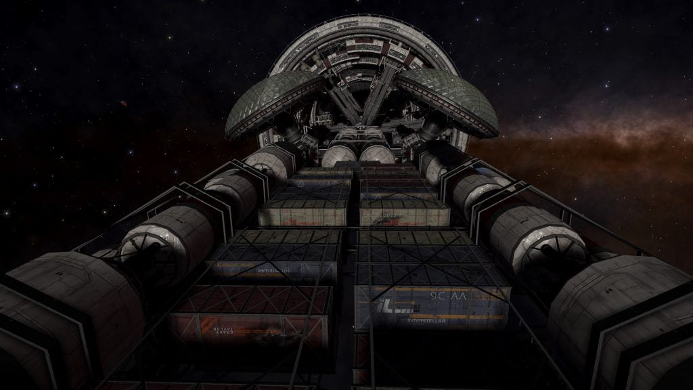
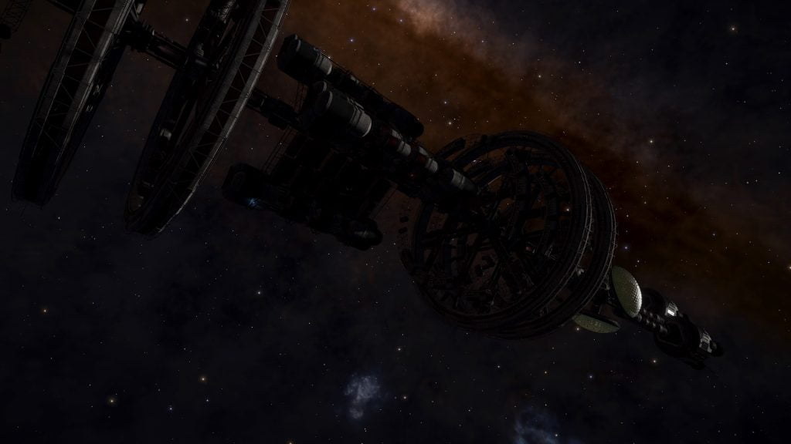

Pleione is an abandoned Generation Ship that can be found in the Hez Ur system, 8,266 Ls away from the Main Star, in the direction of the Teuten system.
The ship was reported by CMDR Carbucketty (Source: Reddit)
The location is revealed by the Listening Post in the Puppis Sector FB-X b1-4 system, orbiting body 3:
UNREGISTERED DATA
…Transponder Signal PLE-461-A Detected…
Matching Signal Detected. Hez Ur. Time Stamp Predates Parameters.
…Situation…newborns…nine months…all…pregnancies have produced…Hez Ur…I’m currently looking…complement…male…female…8…l have..idea…time…ls…potential… Teuten…
…Signal Lost…
It has previously been found 8,395Ls away from the planet Hez Ur 5, on a course towards the Teuten system. The exact location changes as the planets rotate, and so it can be tricky to find the ship.

A series of four Ship Log Uplink points can be located along the hull. Deploy your ship’s hardpoints and use the onboard Data Link Scanner within 200m of each post to scan them and retrieve the logs. In addition to the text, each log is accompanied by an audio recording:
THE CHROMOSOME INCIDENT 1/4
Medical Log 247/4
I’ve researched some statistics and there could be a problem. Over the past three months 75% of pregnancies have provided a male foetus. I’m sure it’s nothing to worry about right now. Although I’m starting to think my predecessor made a mistake not bringing any medical equipment that could manipulate gender at the embryonic stage. I mean I can understand the ethics behind it, but this has left us hanging a little bit. Especially now we’re in this situation. I can only hope it evens itself out.
THE CHROMOSOME INCIDENT 2/4
Medical Log 320/9
Situation is now critical. We’ve had no female newborns for the past nine months and all recent pregnancies have produced male foetuses. I’m currently looking into the problem and it would appear that none of the ship’s complement are producing male gametes with the XX chromosome. That means that even if we could artificially inseminate with a sample we still wouldn’t produce any zygotes with the potential to form a female embryo. l have no idea how to solve this as we have no stock with both XX and XY samples on the ship – another mistake my predecessor made. If I can find out the cause of this anomaly hopefully it will lead me to a solution. We have time to fix this, and I’m not panicking yet, but this has the potential to be disastrous to the success of our mission.
THE CHROMOSOME INCIDENT 3/4
Medical Log 398/1
After all these years I finally have to come to terms with the fact that we’re never going to find a solution to this problem. The last member of the ship’s complement of child bearing age has now had a boy. She was sixty nine. If I could find a solution, even if I applied the stims and gene therapy that allowed any of them to carry a child, none of the women aboard ship would reach full term anyway.
THE CHROMOSOME INCIDENT 4/4
Medical Log 537/5
This will be my last entry. The men aboard are preparing to evacuate. They know the mission is doomed and don’t want to die here. I don’t blame them. I could still go with them, but I’ve refused the offer. I failed this ship and everyone aboard. It’s only right that I die with the mission. Good luck to them.
